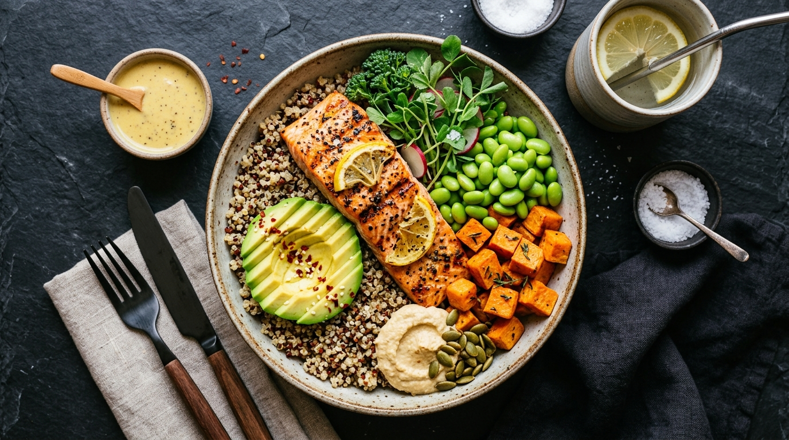
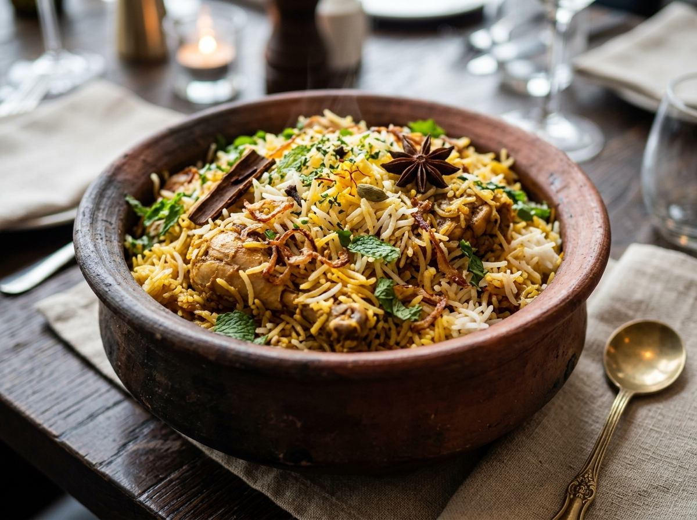

Know What You Eat.
Just Snap Your Food.
Use AI to identify your meal and get an estimated breakdown of calories, protein, carbohydrates, fibre, sugar, fats, and environmental carbon impact in seconds.

AI Food Scanner
Take a photo using your device camera or upload any food image. Our vision engine detects the dish, estimates ingredients, and calculates nutritional composition.

Plate Ready
Our neural vision network will detect ingredients, estimate portion weights, and breakdown macronutrients.
Analyzing your food...
Chicken Biryani
Caloric contribution from each primary macronutrient for this meal portion.
Estimated Environmental Impact
Carbon footprint estimate modeled from agricultural lifecycle databases. Label is estimated; actual footprint depends on supply chains.
- Farming method (pasture vs feedlot)
- Transportation & cold chain
- Processing & packaging
- Cooking fuel & energy source
- Food waste in preparation
Track Daily Calories & Nutrition
Monitor consumed meals against your personal calorie targets, balance your macros, and maintain healthy hydration.
Today's Target
Meals Consumed Today
Live LogMeal History
Review past scanned dishes, inspect nutritional trends, and export your personal dietary logs.
Healthy Eating Guidance
Actionable dietary wisdom tailored for students, athletes, and busy professionals.
Gym & Fitness Athletes
Optimize muscle protein synthesis and recovery with consistent macro distribution throughout the day.
- Aim for 1.6g to 2.2g protein per kg of bodyweight
- Pair complex carbs with lean protein 1-2 hours pre-workout
- Stay hydrated with electrolytes during intense lifting
Students & Brain Power
Affordable, nutrient-dense nutrition designed for sharp cognitive function, memory, and sustained exam energy.
- Lentils, eggs, and oats provide budget-friendly complete nutrition
- Avoid high-sugar energy drinks that lead to reactive glucose crashes
- Include omega-3 rich walnuts and chia seeds for brain clarity
Working Professionals
Prevent the 2 PM afternoon slump and maintain steady metabolic health during sedentary office hours.
- Follow the Plate Method: 50% vegetables, 25% protein, 25% carbs
- Keep raw almonds or fresh fruit handy to prevent vending machine raids
- Take a 5-minute walk after meals to blunt postprandial glucose